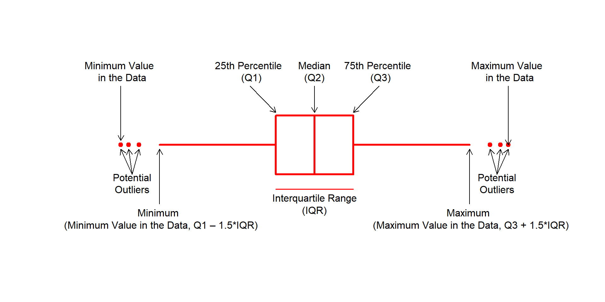
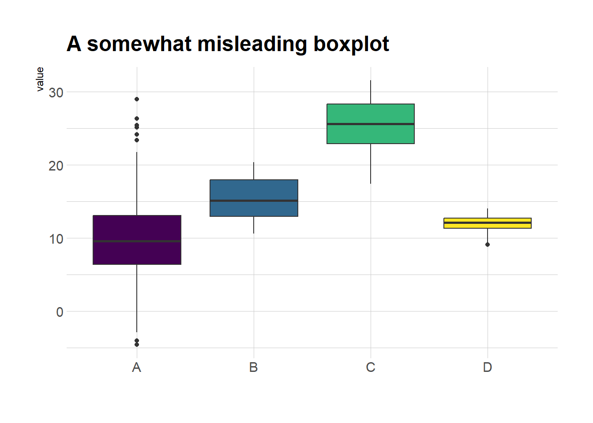
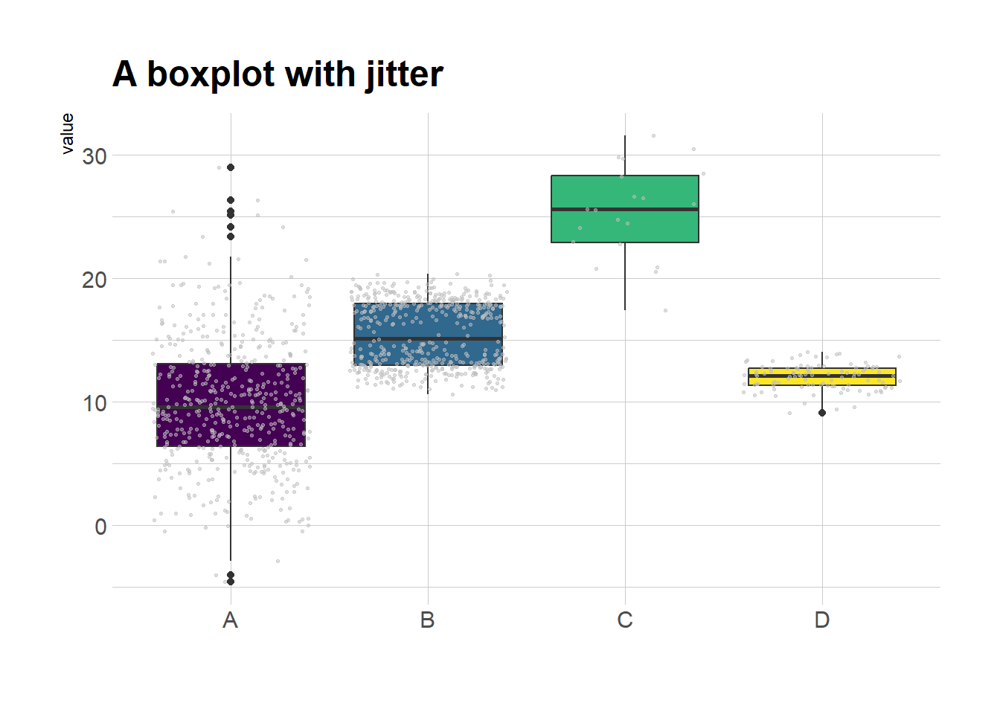
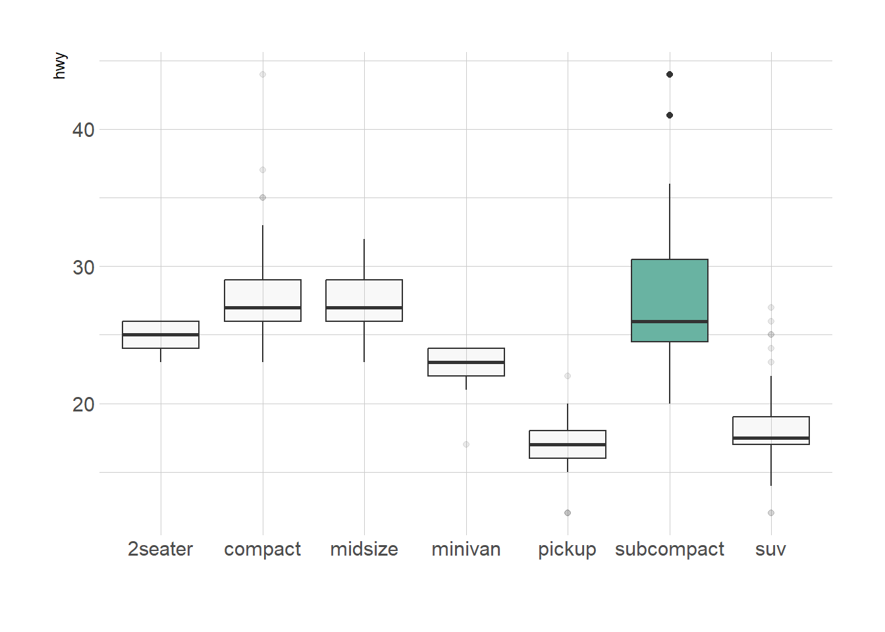
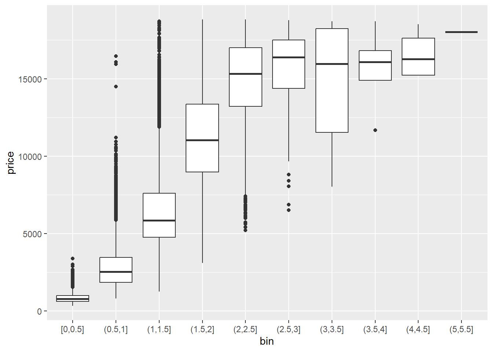
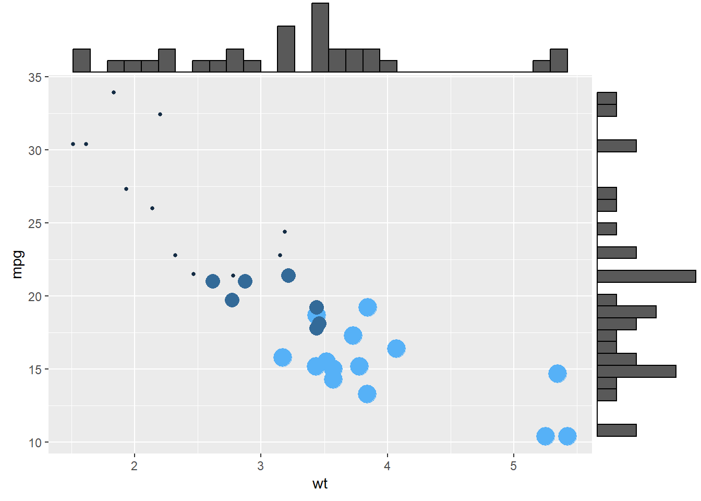
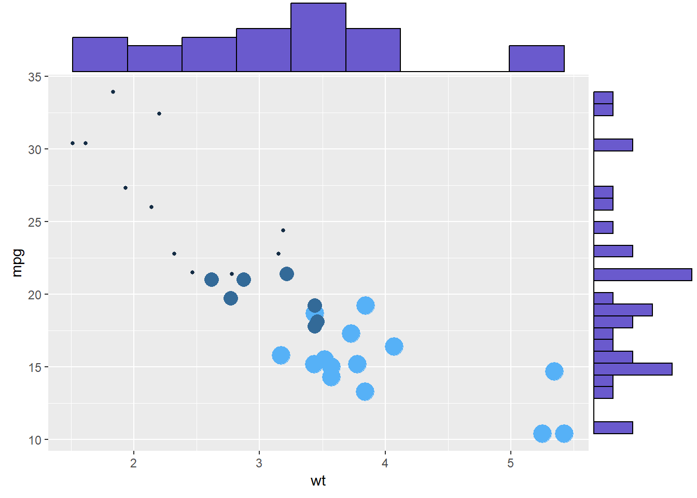

Show/Hide Code
library(tidyverse)
library(hrbrthemes) # hrbrthemes 提供了更适合排版的主题
library(viridis) # viridis 提供了好看的色盲友好型颜色
library(ggdist) # ggdist 提供了半小提琴图和云雨图
library(patchwork) # patchwork 用于图形拼接
library(ggExtra) # ggExtra 用于 ggplot2 散点图的边际图library(tidyverse)
library(hrbrthemes) # hrbrthemes 提供了更适合排版的主题
library(viridis) # viridis 提供了好看的色盲友好型颜色
library(ggdist) # ggdist 提供了半小提琴图和云雨图
library(patchwork) # patchwork 用于图形拼接
library(ggExtra) # ggExtra 用于 ggplot2 散点图的边际图箱线图又叫盒须图，展示数据的中位数(median)、上下四分位数(Quartiles)、四分位距(IQR)、须线(Whiskers)和异常值(outlier)。
这是说明箱线图构成的示意图： 

但是，r-graph-gallery 这个图的上下须比例不太对，我用 Base R 重新画了一个：
# --- 1. 参数设置 ---
# par(bg = "#eff8fc") # 背景
# 创建一个空白的绘图区域
plot(
NA,
xlim = c(-45, 145),
ylim = c(2, 8),
axes = FALSE,
xlab = "",
ylab = ""
)
# --- 2. 定义箱形图的统计值和位置 ---
y_center <- 5 # 图形在Y轴上的中心位置
box_height <- 2 # 箱体的高度
text_color <- "#000000" # 文本和箭头的颜色
# 定义关键的统计数值
q1 <- 35 # 第1四分位数 (Q1)
median_val <- 50 # 中位数 (Q2)
q3 <- 65 # 第3四分位数 (Q3)
iqr <- q3 - q1 # 四分位距 (IQR)
# 根据IQR定义须的末端位置（内限）
whisker_low <- q1 - 1.5 * iqr
whisker_high <- q3 + 1.5 * iqr
# 定义一些离群点 (outliers)
outliers_low <- whisker_low - c(8, 12, 15)
outliers_high <- whisker_high + c(8, 12, 15)
# --- 3. 绘制图形元素 ---
# 绘制箱体 (Box)
rect(
q1,
y_center - box_height / 2,
q3,
y_center + box_height / 2,
border = "red",
lwd = 3
)
# 绘制中位数线
segments(
median_val,
y_center - box_height / 2,
median_val,
y_center + box_height / 2,
col = "red",
lwd = 3
)
# 绘制上下须 (Whiskers)
segments(whisker_low, y_center, q1, y_center, col = "red", lwd = 3)
segments(q3, y_center, whisker_high, y_center, col = "red", lwd = 3)
# 绘制离群点
points(c(outliers_low, outliers_high), rep(y_center, 6), pch = 19, col = "red")
# --- 4. 添加注解和箭头 ---
# 中位数 (Median)
arrows(
x0 = median_val,
y0 = y_center + 2,
x1 = median_val,
y1 = y_center + box_height / 2 + 0.1,
col = text_color,
length = 0.1
)
text(
x = median_val,
y = y_center + 2.5,
labels = "Median\n(Q2)",
col = text_color
)
# Q1
arrows(
x0 = q1 - 10,
y0 = y_center + 2,
x1 = q1,
y1 = y_center + box_height / 2 + 0.1,
col = text_color,
length = 0.1
)
text(
x = q1 - 10,
y = y_center + 2.5,
labels = "25th Percentile \n (Q1)",
col = text_color
)
# Q3
arrows(
x0 = q3 + 10,
y0 = y_center + 2,
x1 = q3,
y1 = y_center + box_height / 2 + 0.1,
col = text_color,
length = 0.1
)
text(
x = q3 + 10,
y = y_center + 2.5,
labels = "75th Percentile \n (Q3)",
col = text_color
)
# 四分位距 (IQR)
segments(
x0 = q1,
y0 = y_center - 1.5,
x1 = q3,
y1 = y_center - 1.5,
col = "red",
lwd = 1.5
)
text(
x = (q1 + q3) / 2,
y = y_center - 2,
labels = "Interquartile Range\n(IQR)",
col = text_color
)
# 左侧离群点
arrows(
x0 = mean(outliers_low) + 1,
y0 = y_center - 1,
x1 = outliers_low[2],
y1 = y_center - 0.15,
col = text_color,
length = 0.1
)
arrows(
x0 = mean(outliers_low) + 1,
y0 = y_center - 1,
x1 = outliers_low[1],
y1 = y_center - 0.15,
col = text_color,
length = 0.1
)
arrows(
x0 = mean(outliers_low) + 1,
y0 = y_center - 1,
x1 = outliers_low[3],
y1 = y_center - 0.15,
col = text_color,
length = 0.1
)
text(
mean(outliers_low) + 1,
y_center - 1.3,
"Potential\nOutliers",
col = text_color
)
# 右侧离群点
arrows(
x0 = mean(outliers_high) - 1,
y0 = y_center - 1,
x1 = outliers_high[2],
y1 = y_center - 0.15,
col = text_color,
length = 0.1
)
arrows(
x0 = mean(outliers_high) - 1,
y0 = y_center - 1,
x1 = outliers_high[1],
y1 = y_center - 0.15,
col = text_color,
length = 0.1
)
arrows(
x0 = mean(outliers_high) - 1,
y0 = y_center - 1,
x1 = outliers_high[3],
y1 = y_center - 0.15,
col = text_color,
length = 0.1
)
text(
mean(outliers_high) - 1,
y_center - 1.3,
"Potential\nOutliers",
col = text_color
)
# 最小值标签 (Whisker end)
arrows(
x0 = whisker_low,
y0 = y_center - 2,
x1 = whisker_low,
y1 = y_center - 0.15,
col = text_color,
length = 0.1
)
text(
x = whisker_low,
y = y_center - 2.5,
labels = "Minimum \n (Minimum Value in the Data, Q1 – 1.5*IQR)",
col = text_color
)
# 最大值标签 (Whisker end)
arrows(
x0 = whisker_high,
y0 = y_center - 2,
x1 = whisker_high,
y1 = y_center - 0.15,
col = text_color,
length = 0.1
)
text(
whisker_high,
y_center - 2.5,
"Maximum \n (Maximum Value in the Data, Q3 + 1.5*IQR)",
col = text_color
)
# 数据中的真实最小值
arrows(
x0 = min(outliers_low),
y0 = y_center + 2,
x1 = min(outliers_low),
y1 = y_center + 0.15,
col = text_color,
length = 0.1
)
text(
x = min(outliers_low),
y = y_center + 2.5,
labels = "Minimum Value \n in the Data",
col = text_color
)
# 数据中的真实最大值
arrows(
x0 = max(outliers_high),
y0 = y_center + 2,
x1 = max(outliers_high),
y1 = y_center,
col = text_color,
length = 0.1
)
text(
x = max(outliers_high),
y = y_center + 2.5,
labels = "Maximum Value \n in the Data",
col = text_color
)
Base R 绘制)但是，这种信息的总结也有个大问题——无法显示数据的分布情况。例如：正态分布可能看起来与双峰分布完全相同。因此，考虑用小提琴图或脊线图。
# 创建数据集
data1 <- data.frame(
name = c(
rep("A", 500),
rep("B", 250),
rep("B", 250),
rep("C", 20),
rep("D", 100)
),
value = c(
rnorm(500, 10, 5),
rnorm(250, 13, 1),
rnorm(250, 18, 1),
rnorm(20, 25, 4),
rnorm(100, 12, 1)
)
)
data1 |>
ggplot(aes(x = name, y = value, fill = name)) +
geom_boxplot() +
scale_fill_viridis(discrete = TRUE) + # 好看的色盲友好型颜色,离散变量
theme_ipsum() +
theme(legend.position = "none") +
labs(x = "") +
ggtitle("A somewhat misleading boxplot")
适合数据量不太大的情况
data1 |>
ggplot(aes(x = name, y = value, fill = name)) +
geom_boxplot() +
scale_fill_viridis(discrete = TRUE) + # 好看的色盲友好型颜色,离散变量
geom_jitter(color = "grey", size = 0.5, alpha = 0.5) +
theme_ipsum() +
theme(legend.position = "none") +
labs(x = "") +
ggtitle("A boxplot with jitter")
发现:
组 C 样本量小。在得出组 C 的值高于其他组的结论之前，要考虑样本量.
组 B 呈现出双峰分布(y = 18 和 y = 13),但是箱线图中看起来和组 A 并无区别.
# 显示样本量
sample_size <- data1 |>
group_by(name) |>
summarize(num = n())
data1 |>
left_join(sample_size) |>
mutate(myaxis = paste0(name, "\n", "n=", num)) |>
ggplot(aes(x = myaxis, y = value, fill = name)) +
geom_violin(width = 1.4) +
geom_boxplot(width = 0.1, color = "grey", alpha = 0.2) +
scale_fill_viridis(discrete = TRUE) +
theme_ipsum() +
theme(legend.position = "none") +
labs(x = "") +
ggtitle("A violin plot")
看了就知道,云(半小提琴)+雨(散点)的组合。
data1 |>
ggplot(aes(x = factor(name), y = value, fill = factor(name))) +
# 添加半小提琴图（显示分布）
stat_halfeye(
adjust = 0.5,
justification = -0.1,
.width = 0,
point_colour = NA
) +
# 添加散点（显示原始数据点）
stat_dots(
side = "left",
justification = 1.1,
binwidth = 0.25
) +
# 设置色盲友好型配色
scale_fill_viridis(discrete = TRUE) +
theme_ipsum() +
theme(legend.position = "none") +
labs(x = "") +
ggtitle("A raincloud plot example")把头顺时针旋转90度(或交换R代码X轴和Y轴)，就更像云雨了
甚至还可以再加上箱线图
data1 |>
ggplot(aes(x = factor(name), y = value, fill = factor(name))) +
# 添加半小提琴图（显示分布）
stat_halfeye(
adjust = 0.5,
justification = -0.2,
.width = 0,
point_colour = NA
) +
# 添加箱线图
geom_boxplot(
width = 0.12,
outlier.color = NA,
alpha = 0.5
) +
# 添加散点（显示原始数据点）
stat_dots(
side = "left",
justification = 1.1,
binwidth = 0.25
) +
# 设置色盲友好型配色
scale_fill_viridis(discrete = TRUE) +
theme_ipsum() +
theme(legend.position = "none") +
labs(x = "") +
ggtitle("A raincloud plot example")主要是geom_boxplot()函数.
ggplot(mpg, aes(x = class, y = hwy)) +
geom_boxplot()
ggplot(mpg, aes(x = class, y = hwy)) +
geom_boxplot(
color = "blue", # 箱线图边框颜色为蓝色
fill = "blue", # 箱体填充颜色为蓝色
alpha = 0.2, # 箱体透明度为0.2，便于观察重叠部分
notch = TRUE, # 显示缺口，用于比较中位数是否有显著差异
notchwidth = 0.8, # 缺口的宽度
outlier.colour = "red", # 异常值点的边框颜色为红色
outlier.fill = "red", # 异常值点的填充颜色为红色
outlier.size = 1 # 异常值点的大小为3
)
mpg |>
# fct_reorder() 函数排序
ggplot(aes(x = fct_reorder(class, hwy, .fun = "median"), y = hwy)) +
geom_boxplot()
p1 <- ggplot(mpg, aes(x = class, y = hwy)) +
geom_boxplot(color = "red", fill = "orange", alpha = 0.2)
p2 <- ggplot(mpg, aes(x = class, y = hwy, fill = class)) +
geom_boxplot(alpha = 0.3) +
theme(legend.position = "none")
p3 <- ggplot(mpg, aes(x = class, y = hwy, fill = class)) +
geom_boxplot(alpha = 0.3) +
theme(legend.position = "none") +
scale_fill_brewer(palette = "BuPu") # 调色板
p4 <- ggplot(mpg, aes(x = class, y = hwy, fill = class)) +
geom_boxplot(alpha = 0.3) +
theme(legend.position = "none") +
scale_fill_brewer(palette = "Dark2") # 调色板
p1 + p2 + p3 + p4
mpg |>
# 添加一列 'type'，用于标记是否高亮某个组
mutate(type = ifelse(class == "subcompact", "Highlighted", "Normal")) |>
ggplot(aes(x = class, y = hwy, fill = type, alpha = type)) +
geom_boxplot() +
scale_fill_manual(values = c("#69b3a2", "grey")) + # 手动设置填充色，高亮组为绿色，其余为灰色
scale_alpha_manual(values = c(1, 0.1)) + # 手动设置透明度，高亮组为不透明，其余为半透明
theme_ipsum() + # 使用 hrbrthemes 包的排版主题
theme(legend.position = "none") + # 不显示图例
xlab("") # 去除 x 轴标签
# 构造数据
variety <- rep(LETTERS[1:7], each = 40) # 7种品种，每种40个观测
treatment <- rep(c("high", "low"), each = 20) # 处理分为high和low，每组20个观测
note <- seq(1:280) + sample(1:150, 280, replace = TRUE) # 生成note变量，添加一定随机性
data2 <- data.frame(variety, treatment, note) # 组合成数据框
# 分组箱线图
ggplot(data2, aes(x = variety, y = note, fill = treatment)) +
geom_boxplot()
# 少分面箱线图
ggplot(data2, aes(x = variety, y = note, fill = treatment)) +
geom_boxplot() +
facet_wrap(~treatment)# 多分面箱线图
ggplot(data2, aes(x = variety, y = note, fill = treatment)) +
geom_boxplot() +
facet_wrap(~variety, scale = "free") # 自由y轴让箱线图的宽度与样本量成正比
# 转换为因子类型
mpg$drv <- as.factor(mpg$drv)
# 创建x轴标签，包含每个drv水平的名称及其对应的样本量
n_xlab <- str_glue("{levels(mpg$drv)}\n(N={table(mpg$drv)})")
ggplot(mpg, aes(x = drv, y = hwy, fill = drv)) +
geom_boxplot(varwidth = TRUE, alpha = 0.2) + # varwidth = TRUE 不等宽
scale_x_discrete(labels = n_xlab) +
theme(legend.position = "none")
把连续变量分箱后再绘制箱线图。
diamonds |>
mutate(bin = cut_width(carat, width = 0.5, boundary = 0)) |>
ggplot(aes(x = bin, y = price)) +
geom_boxplot()
ggplot(mpg, aes(x = drv, y = hwy, fill = drv)) +
geom_boxplot(alpha = 0.7) +
stat_summary(fun = mean, geom = "point", shape = 1, size = 2, color = "red") +
theme(legend.position = "none")# data1 是之前创建的数据集
data1 |>
ggplot(aes(x = name, y = value, fill = name)) +
geom_boxplot() +
scale_fill_viridis(discrete = TRUE) + # 好看的色盲友好型颜色,离散变量
geom_jitter(color = "grey", size = 0.5, alpha = 0.5) +
theme_ipsum() + # 更适合排版的主题
theme(legend.position = "none") +
labs(x = "") +
ggtitle("A boxplot with jitter")ggExtra包来实现更复杂（花哨）的图形，在ggplot2散点图的基础上再叠加箱线图、密度曲线等。
# 创建ggplot散点图
p <- ggplot(mtcars, aes(x = wt, y = mpg, color = cyl, size = cyl)) +
geom_point() +
theme(legend.position = "none")
ggMarginal(p, type = "histogram")
ggMarginal(p, type = "density")
ggMarginal(p, type = "boxplot")
还可以定制化样式：
# 设置边际直方图的尺寸大小为10
ggMarginal(p, type = "histogram", size = 10)
# 设置边际直方图的填充颜色为slateblue，x轴直方图分箱数为10
ggMarginal(p, type = "histogram", fill = "slateblue", xparams = list(bins = 10))
# 只在x轴添加边际图，边际图颜色为紫色，尺寸为4
ggMarginal(p, margins = "x", color = "purple", size = 4)主要是通过boxplot()函数.
但是 base R 多看一秒都是浪费时间,直接ggplot2吧.
如果实在想学,可以看 r-graph-gallery 的文档。
# 自动安装packages
if (!require(ggstatsplot)) {
install.packages(
"ggstatsplot",
repos = "https://cloud.r-project.org"
)
}
if (!require(palmerpenguins)) {
install.packages(
"palmerpenguins",
repos = "https://cloud.r-project.org"
)
}
palmerpenguins::penguins |>
drop_na() |>
ggstatsplot::ggbetweenstats(x = species, y = flipper_length_mm, 1)在 ggstatsplot 可以看到进一步美化。
或者
在 tidyplots 有另一种风格的统计箱线图。